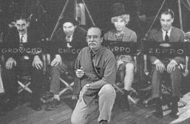
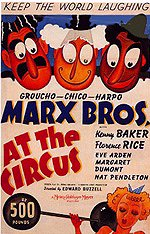
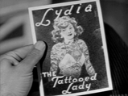

NOTICE: This page may or may not be available in the future. See extended datribe at the top of my home page at the the old address or at the new address.
| John Benz Fentner, Jr.'s Marx Brothers Page |
"How narrow is the vision that exalts the busyness
of the ant above the singing of the grasshopper."
Kahlil Gibran, Sand and Foam
 |
(well...5 if you count Zeppo)
Please don't forget to sign the
[Guest book no longer available]
|
MARXIST RESOURCES
"A foolish consistency is the hobgoblin of small minds." Ralph Waldo Emerson | |
|
Why A Duck? - Frank Bland's Marvelous Page Marxist Propaganda oldbrit's Marx Biography Mark Wensel's Marx Brothers Page Copasetic's Marx Brothers Page Mikael Uhlin's Marxology Marx Brother's Warehouse The Inimitable Marx Brothers Marx Brothers in Print |
Stefan Timphus' Great Bibliography The Groucho Zone WWW-Seite von Rolf Cleis Groucho Marx Slept Here Marx-Out-Of-Print Groucho Marx Slept Here A Night At The Opera Kevin White's MB Page |
|
A PROUD* MEMBER OF THE 
Previous | Next | Index | Random |
| MARXIST PHOTO GALLERY |
| Filmographies from the Internet Move Database | |
|
The Marxes Groucho Chico Harpo Zeppo Sam The Ladies Margaret Dumont Thelma Todd The Bad Guys Louis Calhern Edgar Kennedy Sig Ruman |
The Writers (Who occasionally heard their own lines) Bert Kalmar George S. Kaufman Harry Ruby Morrie Ryskind Ben Hecht S.J. Perelman Arthur Sheekman Nat Perrin |
| The lovely and talented Teej Ruler of the Universe and Keeper of the Sacred Mailing List. |
|
Join The Marx Brothers Mailing List |
| The not so lovely but larger Frank Bland Proprietor of the Ducklist. |
|
Join The DUCKLIST |
| A SPECIAL PRESENTATION Of THIS PAGE!! (Nobody else wanted them) Enjoy the reminiscences of LES MARSDEN World Famous Marx Brothers Impersonator and Chicken Thief. |

|
A NIGHT IN ELSINORE
A parody of William Shakespeare's HAMLET As performed by the Marx Brothers committed by Richard Nathan And read Richard's other fine parodies wherein the Marx Brothers play bit parts: King Lear MacBeth |
|
Read Groucho's Interview On the Dick Cavett Show |
|
My very own Marx Brothers Collection Books, Movies and Toys (Like you really care, right?) |
|
 |
Groucho and Cigars by his son Arthur Marx in Cigar Aficianado Magazine |
Songs and Lyrics
|
 Poster From The Nostalgia Factory |
Wouldja believe the entire "Lydia the Tattooed Lady" from At The Circus in WAV or MPEG format? Big files (over 2 megs) but no true Marxist should be without their very own copy.  |
"Whatever It Is, I'm Against It!"
(Caution: 635K Sound File!)
A Great Collection of Pictures and Sound Files from Bill Buchanan
A Night at the Opera
EarthStation1: The Marx Brothers WAVs
(And be sure to check out Frank Bland's Site,
listed above, for a large sound file collection)
Lyrics - Lydia The Tattooed Lady
|
|
For the very best in Marxist Literature, Audio Tapes, CDs, Videos, Memorabilia and Souvenirs pay a visit to The "Why A Duck?" Store and Stefan Timphus' Bibliography. Both pages have direct links to Amazon Books.
Order something that is sure to convince your significant other that you have finally lost your mind. Tell 'em Groucho sent you. |
And...For The Marxist Literati...
|
|
|
"But chaos is a condition of creativity", says Zarathustra, "one must have chaos in one, to give birth to a dancing star." Friedrich Wilhelm Nietzsche Thus Spake Zarathustra Part 1. |
{kind=link}
They say of me, and so they should,
It's doubtful if I come to good.
I see acquaintances and friends
Accumulating dividends,
And making enviable names
In science, art, and parlor games.
But I, despite expert advice,
Keep doing things I think are nice,
And though to good I never come-
Inseparable my nose and thumb!
Harpo's Pal Dorothy Parker
{kind=link}